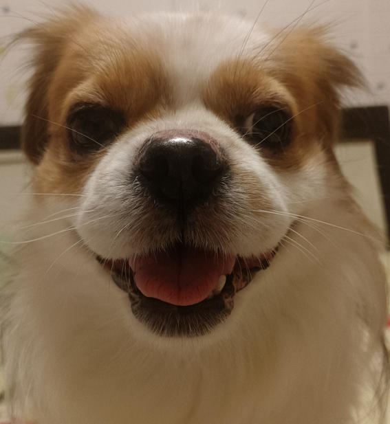
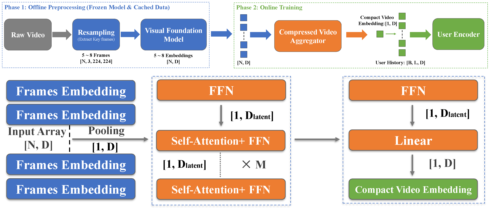
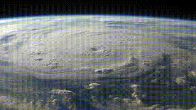
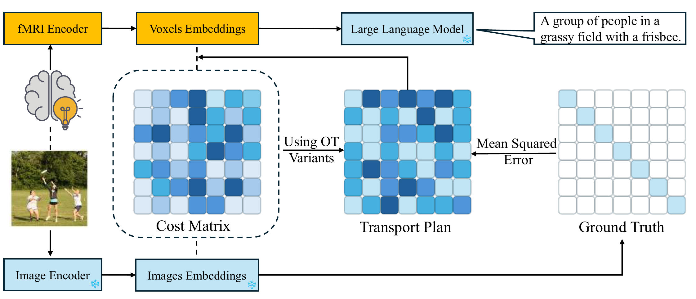
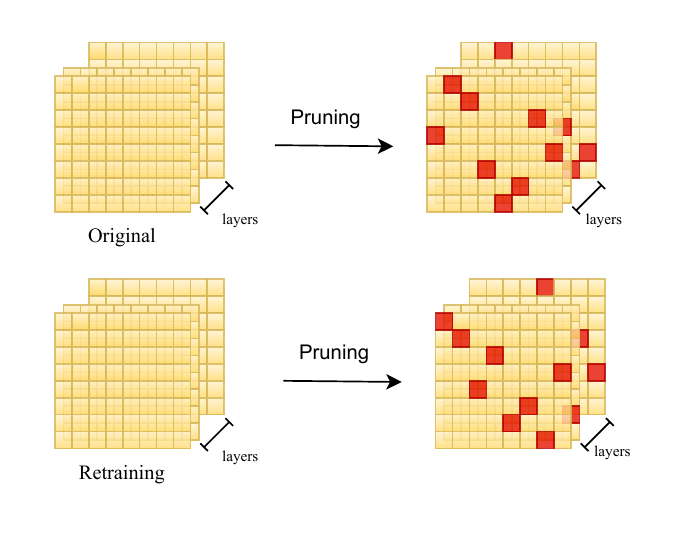
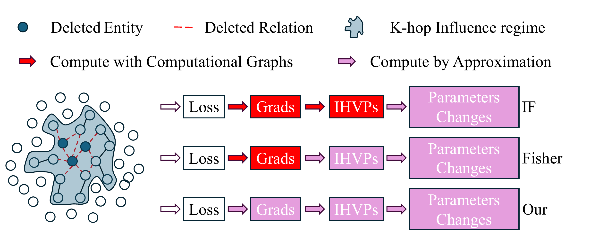
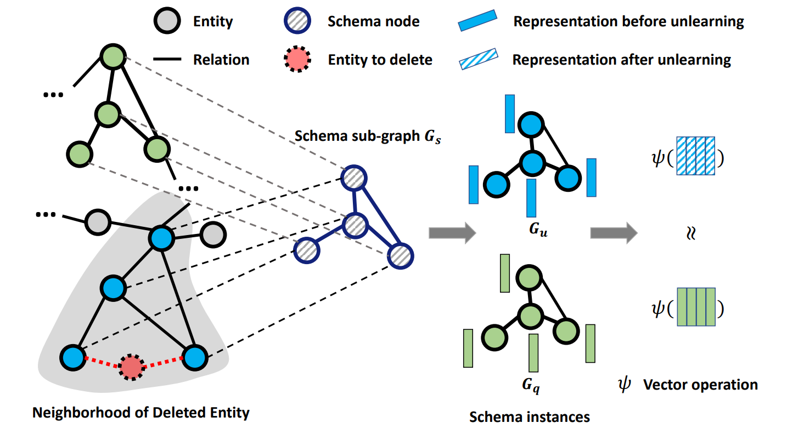

Yang Xiao (萧扬)
Ph.D. Student
Department of Computer Science, University of Tulsa
Research Interests: Computer Vision, Trustworthy Artificial Intelligence
Ph.D. advisor: Professor Bo Hui
📝 Education
- Ph.D. in Computer Science, University of Tulsa (2024.08 - Present)
-
B.S. in Applied Psychology, Nankai University (2020.09 - 2024.06)

📝 Work
- Intern in AI4Medicine, Dept. of AI&I, Mayo Clinic (2025.06 - 2025.08)
🔥 News
- [2026.01.26] Our papers were accepted by ICLR 2026.
- [2025.10.20] Our paper was accepted by CTAD 2025.
- [2025.09.23] Our paper were accepted by NIPS 2025 RegML Workshop and NIPS 2025 FoRLM Workshop.
- [2025.08.05] Our paper was accepted by CIKM 2025.
- [2025.07.10] Our paper was accepted by ECAI 2025.
- [2025.06.25] Our papers were accepted by ICCV 2025.
📝 Selected Publications






📝 Publications
Regular Conference Papers
Forget Many, Forget Right: Scalable and Precise Concept Unlearning in Diffusion Models
ICLR 2026
Optimal Transport for Brain-Image Alignment: Unveiling Redundancy and Synergy in Neural Information Processing
ICCV 2025
Sculpting Memory: Multi-Concept Forgetting in Diffusion Models via Dynamic Mask and Concept-Aware Optimization
ICCV 2025
DBA-DFL: Towards Distributed Backdoor Attacks with Network Detection in Decentralized Federated Learning
ECAI 2025
Short Conference Papers
Workshop Papers
DBA-DFL: Towards Distributed Backdoor Attacks with Network Detection in Decentralized Federated Learning
ICML 2025 Workshop (Oral)
Weak-to-Strong Generalization beyond Accuracy: a Pilot Study in Safety, Toxicity, and Legal Reasoning
ICLR 2025 Workshop
The Right to be Forgotten in Pruning: Unveil Machine Unlearning on Sparse Models
NeurIPS 2025 Workshop
Weak-to-Strong Generalization with Failure Trajectories: A Tree-based Approach to Elicit Optimal Policy in Strong Models
NeurIPS 2025 Workshop
Pre-print & Submitted
From Bits to Chips: An LLM-based Hardware-Aware Quantization Agent for Streamlined Deployment of LLMs
arXiv Preprint
📊 Statistics
CCF Paper Statistics
| Category | 2024 | 2025 | 2026 | Total |
|---|---|---|---|---|
| CCF-A | 0 | 2 | 3 | 2 |
| CCF-B | 1 | 2 | 0 | 3 |
| CCF-C | 1 | 0 | 0 | 1 |
| Citation | 7 | 37 | 4 | 48 |
🌧️ Rejects (To be better)
Research Reject
- [2025.11] ICLR withdrawn * 2
- [2025.09] NIPS reject
- [2025.05] ACL reject → CIKM 2025
- [2025.05] ICML reject → NIPS 2025
- [2024.12] AAAI reject → ACL 2025
- [2024.07] ACL desk reject (Forgot to change the path in the anonymous code, leak my name) → COLING 2025 & LoG 2024
- [2024.05] UAI withdrawn → CIKM 2024
Job Reject
- [2025.12.01] Point72 reject
- [2025.11.11] Mutual of Omaha reject
- [2025.07.02] Microsoft reject
- [2025.06.27] Microsoft reject
- [2025.06.10] Amazon reject
- [2025.03.05] Visa reject